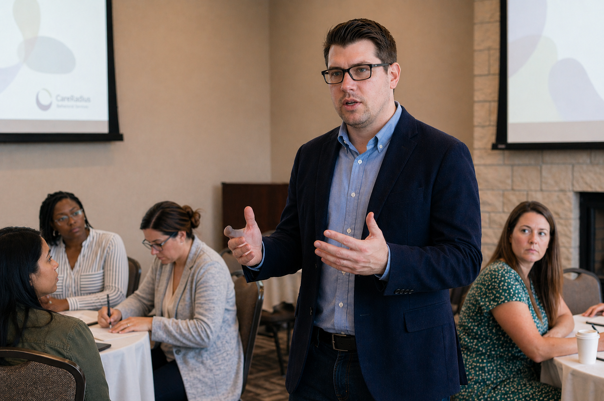

01
Respect for fit
A consultation is a clinical decision point. Fit matters because people are investing time, money, vulnerability, and trust.
Stonebridge Psychological Group was created for therapy, assessment, and forensic services that require careful attention, honest judgment, and respect for complexity. The practice is grounded in a simple idea: good psychological work depends not only on the clinician in the room, but on the structure that allows that clinician to think clearly, work carefully, and remain present.

A bridge does not need to announce itself to be useful. It holds weight, offers passage, and remains steady while people move across difficult terrain.
“I created Stonebridge because I had seen too many places where the language of care sounded right, but the structure underneath it did not support the work.”
I have worked across community mental health, hospital settings, private practice, partial hospitalization and intensive outpatient programs, and forensic evaluation. In many of those settings, I saw committed clinicians doing meaningful work inside systems that did not always support the care they claimed to value.
Clients usually do not see that part. They come to therapy, assessment, or evaluation hoping the person across from them is supported, focused, and able to think carefully with them. They often do not know whether that clinician is carrying an unmanageable caseload, working under unrealistic productivity demands, or trying to provide thoughtful care while already depleted.
That matters. It matters for clinicians, and it matters for clients. Stonebridge is my attempt to build differently. Not perfectly. Not dramatically. But deliberately.

Stonebridge is not designed to take every referral. That is intentional. A careful practice should be able to say when it can help, when it cannot, and when another provider, service, or level of care would be more appropriate. That kind of selectivity is not cold. It is part of ethical care.
A consultation is a clinical decision point. Fit matters because people are investing time, money, vulnerability, and trust.
A practice cannot ask clinicians to be deeply present for others while treating them as interchangeable or endlessly available.
Psychological work should be bounded, thoughtful, and matched to the question being asked. The goal is useful care done carefully.

The clinical work at Stonebridge is relational and depth-oriented. It is influenced by traditions that take the person seriously: the need to be understood, the struggle for agency, the injuries people carry in their sense of self, and the importance of a reliable setting where difficult material can be approached without performance.
But relational work is not boundaryless work. Warmth is not the same as vagueness. Empathy is not the same as saying yes to everything. Good care requires presence, but it also requires judgment.
Therapy, assessment, and forensic work are not the same thing. Each has a different purpose, and Stonebridge does not blur those boundaries. Across all three areas, the task is to define the question, gather what matters, distinguish what is known from what is inferred, and communicate clearly.
Sustained psychological work with attention to patterns, symptoms, relationships, defenses, grief, identity, agency, and change.
Clarifying meaningful questions and organizing complexity into findings and recommendations that can actually be used.
Disciplined psychological judgment applied with restraint to a specific referral or legal question.
A consultation helps determine whether Stonebridge is the right setting, whether another referral would be more appropriate, and what kind of care or evaluation would actually serve the question being brought.